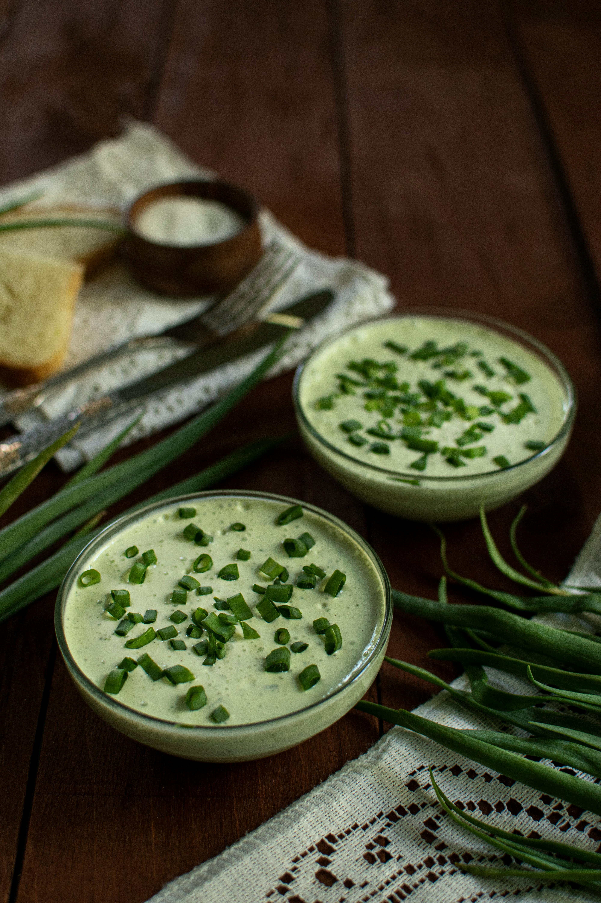

Zucchini soup
Description
This zucchini soup is so rich and creamy that you won't believe there's no cream added. It's easy to make and bursting with flavor, but your guests will think you've been cooking all day! Delicious hot or chilled.
Ingredients
- ½ cup butter
- 2 pounds zucchini, cut into chunks
- 1 can of chicken broth
- 1 teaspoon of salt
- 1 teaspoon of curry podwder
Steps
- Melt butter in a pot over medium heat. Add zucchini, chicken broth, salt, and curry powder to the pot; cook until the zucchini is soft, about 15 minutes.
- Pour soup into a blender no more than half full. Cover and hold lid in place; pulse a few times before leaving on to blend. Puree in batches until smooth.